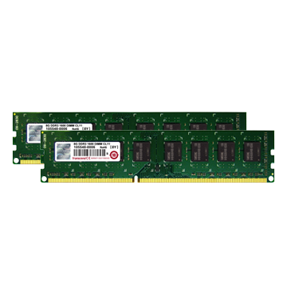
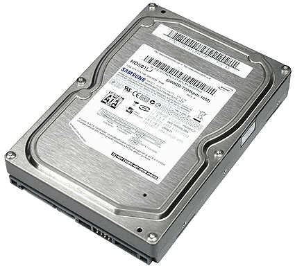
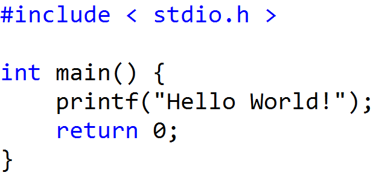
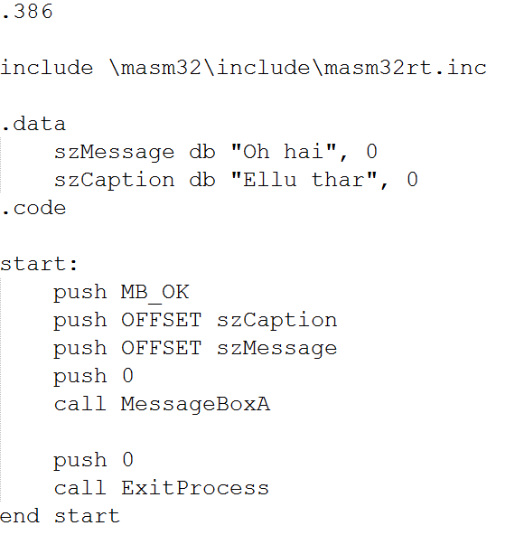
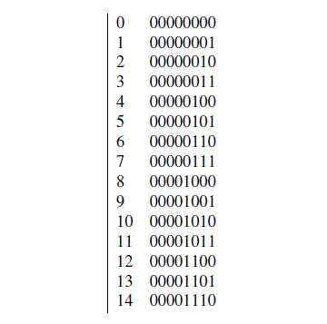
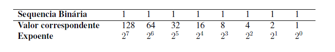

O computador nos dias atuais é usado para diversos fins, como ferramenta de trabalho, estudo, lazer, etc.
Todo computador é composto por diversos componentes, os quais são interligados por algum meio, seja direto ou indireto. Abaixo segue as principais partes de um computador:
- Gabinete o qual serve somente para proteção e alocar os componentes de maneira que aumente a eficiência da refrigeração.
Figura 2 - Fonte de alimentação

- Fonte de alimentação, o próprio nome do componente o descreve, converte a energia de entrada de 110V e/ou 220V, removendo ruidos da rede elétrica e convertendo saída máxima de 12V, o qual alimenta a placa mãe e os demais componentes.
- A placa mãe interliga todos os demais componentes, sejam eles conectados via cabos ou em slots; grande parte das placas mães atuais possuem diversos slots (encaixes com quantidade de pinos específicos), estes são utilizados para
aumentar a quantidade de memória RAM, adicionar placa de vídeo, placa de áudio, placa wireless (conexão sem fio - conhecido popularmente como wi-fi), etc.
Figura 4 - Memória RAM

- A memória RAM (Random Access Memory) armazena programas e dados que estão sendo executados e utilizados; essa memória é do tipo volátil, ou seja, ao perder a alimentação de energia ela perde os dados armazenados.
Figura 4 - Memória RAM

- Disco rígido, conhecido como HD (Hard Disk) é utilizado para armazenar dados, seja documentos, músicas, etc. é salvo neste componente. Diferente da memória RAM, o HD armazena os dados mesmo sem alimentação elétrica, no momento
em que está executando determinado programa, este está sendo executado a partir da memória RAM, ao salvar o resultado do programa em seu HD é gerado uma cópia permanente.
Uma máquina, ou os componentes por si só não podem realizar tarefa alguma, somente executar uma tarefa ordenada com interação ou não. Para haver manipulação do usuário, o hardware (nome dado as partes físicas do computador, citadas
anteriormente) é complementado pelos softwares básicos e utilitários, entre os softwares básicos temse: sistemas operacionais Windows, Linux, Unix, iOS, Android, etc., estes são fundamentais para executar os utilitários; entre
os utilitários temos os aplicativos para navegação na internet (Google Chrome, Internet Explorer, Opera, etc.), criação de documentos e planilhas (Excel, Power Point, Word, LibreOffice, etc.). Como citado anteriormente os utilitários
são executados pelo sistema operacional, o qual prove a interação com o usuário comunicandose com o hardware para desempenhar a função solicitada pelo usuário.
Assim como nós seres humanos temos nossas linguagens para se comunicar, as máquinas também possuem sua forma de comunicação, estas são próprias e cada uma possui as suas limitações e sintaxe (rege como cada instrução deve ser declarada
e escrita). As linguagens de programação são separadas em dois níveis: baixo (Low Level) e alto (High Level), a diferença entre estas são suas aplicações. A linguagem de baixo nível está mais próximo da linguagem de máquina, sendo
utilizada para dar instruções diretamente ao hardware, ou seja, orientálo para desempenhar determina tarefa, entre estas linguagens temos a Linguagem de Máquina (trabalho diretamente com bit 0 e 1) e Assembly, que possui uma sintaxe
um pouco mais compreensível, comparado a linguagem de máquina. As linguagens de alto nível são utilizadas para desenvolver aplicativos, e estão mais próximas a nossa linguagem, facilitando a compreensão; neste nível temos muitas
linguagens, dentre as mais conhecidas são C, C++, Java, Phyton, etc.
Abaixo uma amostra de códigos de baixo e alto nível, ambas as figuras tem como objetivo imprimir a mensagem na tela “Hello World”:
Figura 1 - Exemplo de programa escrito em C

Figura 2 - Exemplo código fonte escrito em Assembly escrito no assembler MASM32

Segundo Floyd (2007) "todos os computadores consistem de blocos funcionais básicos que incluem uma unidade central de processamento (CPU - Center Processing Unit), memória e portas de entrada/saída".
Durante a execução de um programa (nada mais é que um conjunto de instruções), todas as instruções e dados são armazenados na memória RAM até que sejam executados/processados pela CPU, a RAM reserva um espaço para o determinado programa
enquanto ele estiver em execução, este espaço alocado recebe um endereço para poder realizar o gerenciamento sobre os dados/informações, o endereço faz referência aos dados.
A CPU controla a execução de programas do computador, buscando cada instrução na memória principal e executando, sendo capaz de executar várias instruções simultaneamente, ao término do processamento de uma instrução é realizado a
busca da próxima instrução que está sujeita a processamento.
Toda e qualquer interação com o computador é realizado através de dispositivos de entrada de dados, por exemplo, o ato de movimentar o mouse pode ser definido como “linguagem de alto nível”, pois é um gesto que representa algo para
nós humanos, o periférico em si, converte os movimentos em sequência binária e envia ao processador, o mesmo processa a sequência recebida e retorna informações à um dispositivo de saída, neste caso seria a tela, que apresenta
a sequência binária de forma compreensível a nós. Os blocos funcionais básicos (citado anteriormente) são interligados por um meio chamado barramento, os quais conduzem os pulsos elétricos que representam os bits (0 e 1).
Como se pode perceber o hardware extremamente importante no processamento de informações é a unidade central de processamento. A CPU é composta pela unidade de controle (Control Unit - CU), unidade de memória (Memory Unit - MU) e unidade
lógica e aritmética (Arithmetic Logic Unit - ALU).
- A unidade de controle gerencia a entrada, saída e processamento de dados, recebendo as instruções, interpretando-a e assim definindo o que será feito com os dados presentes na instrução.
- A unidade de memória, basicamente é utilizada para armazenar os dados e instruções.
- A unidade lógica aritmética (ALU - Arithmetic Logic Unit) realiza os cálculos a partir da instrução enviada pela unidade de controle, no fim retorna o resultado novamente para unidade de controle e este define o que será feito
com o dado processado.
O sistema operacional trabalha apenas com dois valores, sendo estes zeros (0) e uns (1) para manipular qualquer tipo de informação. Este sistema de numeração é definido como sistema binário.
O sistema binário utiliza apenas dois valores, sendo um sistema de base dois. Estes dois valores são 0 e 1. Concluindo, para 0 temos desligado e 1 para ligado.
Os binários são a menor unidade de informação dos computadores e são chamados de dígitos binários (do inglês binary digit). Para o computador, esse sistema melhora a performance de processamento devido a simplicidade dos cálculos,
já que o processador trabalhará apenas com dois dígitos
Os bits são responsáveis por gerar toda a informação digital que conhecemos, porém, devem estar agrupados para que seja possível gerar algum tipo de informação. Um bit sozinho não é capaz de gerar algum tipo de informação, pelo fato
de que este seria um sinal qualquer. Os grupos de bits podem ser 8, 16, 32 ou 64 bits. Por exemplo, um grupo de 8 bits ´e formado por uma sequência de 8 números zeros ou uns. Por exemplo, o número 23 em um formato binário de 8
bits se escreve: 00010111.
Abaixo, temos uma tabela que representa, à esquerda, os números decimais que nós humanos utilizamos e, à direita, os dígitos binários de 8 bits respectivos aos números decimais.
Tabela 1 - Caracteres alfanuméricos e seus respectivos valores em binário

Cada posição do número um (1) de cada bit corresponde a um valor de uma potenciação. Como no decimal, onde os números são definidos por uma potência na base 10, os binários possuem potência na base 2 para retorno de um determinado
resultado. Este valor retornado depende do valor binário, ou seja, todos dígitos binários zeros não retornam um valor, já os uns, retornam um valor de acordo com a posição entre os 8 dígitos binários.
A seguir temos a representação dos valores nas respectivas posições dos 8 bits e sua potência:
Tabela 2 - As 8 posições binárias e seus respectivos valores e expoentes

Estes dados da segunda linha da tabela são, respectivamente, o valor da exponenciação da potência de 2, começando da direita com o menor valor (expoente 0), para a esquerda, com o maior valor (expoente 7). Abaixo, na terceira
linha da tabela, temos as potências de dois, seguindo a mesma analogia de ordenação dos bits dita acima.
Nas sequências binárias, todos os uns (1’s) possuem o valor correspondente à ordem de como estão apresentados. Já os zeros (0’s) correspondem à um valor nulo (zero). Estes valores são somados, correspondendo `a um índice da tabela
ASCII, que referenciará um caractere qualquer. Essa tabela ´e um código binário que codifica um conjunto de 128 sinais e recebe uma sequência de 8 bits que referencia o caractere específico. Estes são 95 sinais gráficos (letras
do alfabeto latino, como suas demais pontuações e sinais de operação matemática), 33 sinais de controle e 7 para representar todos os seus símbolos.
Para obter o valor numérico decimal de uma sequência de bits, somamos todos os valores correspondente à posição de cada algarismo 1 da sequência binária. Por exemplo, a soma dos 5 primeiros bits:1*16 + 1*8 + 1*4 + 1*2 + 1*1 = 31. A
tabela abaixo mostra um exemplo de como se encontra um valor decimal de uma sequência binária de 8 bits (8 zeros ou uns).
Tabela 3 - Exemplo de representação de um valor de uma sequência binária

O sistema computacional trabalha com com um grupo de valores predefinidos (potências na base 2: 8, 16, 32 ou 65) para formar qualquer tipo de dado. Um conjunto de 8 bits, ou um byte, é utilizado para formar um unico caractere. Este
caractere pode ser letra, numeros ou um caractere especial, e em uma arquitetura de computador, os caracteres são encontrados baseados nas tabelas ASCII. Para consultar a tabela ASCII completa: ASCII
Em uma sequência binária, todos os zeros consecutivos que estiverem à esquerda podem ser ignorados, desde que não haja outro 1 entre a sequência. Por exemplo, um binário de 8 bits 00001011 pode ser escrito somente 1011, e este pode
ser 00000001011 ou 000000000000000001011... Isto porque como dito acima, os zeros não representam valor algum.
Na terminologia dos computadores, palavras são um grupo de algarismos binários que ocupam um local na memória e podem ser processados de uma só vez, podendo ser tanto um dado como uma instrução que diz para o computador qual ação ele
deve tomar. Este pode ser também um caractere da tabela ASCII ou um retorno de um local de um dado na memória.
Existem palavras de tamanho diferente, com cada uma delas recebendo um nome diferenciado:
- 4 bits = NIBBLE (16 variações);
- 8 bits = BYTE (256 variações);
- 16 bits = WORD (65.536 variações);
- 32 bits = DOUBLE WORD (4.294.967.296 variações);
- 64 bits = QUAD WORD (18.446.744.073.709.551.616 variações).
Quanto maior a palavra, maior o número de variações que se pode trabalhar. Uma palavra de 16 bits pode-se trabalhar com números decimais até 65.536. Para sabermos o tamanho de uma memória, por exemplo, utilizamos os bytes para designar
o seu tamanho. O correto seria utilizar BYTE para memórias de 8 bits, WORD para memórias de 16 bits, DOUBE WORD para 32 e assim sucessivamente, porém foi definido BYTE para não confundir, sendo o BYTE a forma usual para designar
o tamanho de uma memória.
No cotidiano, boa parte da humanidade utiliza o alfabeto como idioma e o sistema decimal como forma de numeração. Porém, os computadores utilizam para ambos o sistema binário. Nesse momento você deve estar se questionando, como isso
é possível?
Resposta: Utilizando conversões de dados
Essas conversões ocorrem de forma transparente, ou seja, não visualizamos. São executadas por um conjunto de programas conhecidos como tradutores (compilador, interpretador e montador). Os tradutores transformam a nossa linguagem composta
por números decimais, símbolos, imagens, sons e textos para uma linguagem binária. Quando digitamos um número decimal os tradutores realizam uma conversão desse valor para seu correspondente binário e vice e versa. Esse processo
de conversões entre diferentes sistemas de numeração é conhecido como conversão de base.
O sistema de numeração binário e decimal não são os únicos sistemas existentes, para o nosso propósito conheceremos, além dos já citados, o sistema Octal (8 dígitos) e Hexadecimal (16 dígitos). Ambos são utilizados pelos tradutores
com o propósito de gradativamente realizar a codificação para um nível mais baixo de linguagem.
No próximo item compreenderemos a composição dos diferentes tipos de sistema de numeração e os processos envolvidos nas conversões entre bases. Para conferência dos resultados, entre as conversões, podemos utilizar uma calculadora
científica.
Independente da sua tela ser Full HD, rodando em um Blu-Ray Player, utilizando um cabo HDMI nem sempre o que você rodar vai ter uma qualidade tão boa quanto espera, mas por que?
Vários fatores podem influenciar no resultado final que você vê na tela, entre eles temos a taxa de transmissão e a taxa de transferência de dados, e para isso iremos abordar como funcionam cada um deles, como são mensuradas e no que cada qual influencia no que é apresentado na sua tela
Todo vídeo assistido, seja num computador ou através de algum player na sua TV, tem as informações lidas da midia(HD, CD, DVD, etc) e processadas por algum processador gráfico, e a velocidade que essa leitura ocorre leva o nome de Taxa de transmissão.
Como essa leitura não ocorre diretamente na midia, as informações são enviadas aos processadores em pacotes de arquivos, que são lidos, interpretados e exibidos ao usuário. Quanto maior a velocidade que o processador consegue realizar essas tarefas, maior será a taxa de transmissão, mas como isso afeta a imagem vista?
A taxa média ideal para DVDs fica em torno de 7 a 9 Mb/s, enquanto que os Blu-Rays trabalham com uma taxa de transmissão acima dos 30Mb/s. Essas informações são configuradas durante o processo de gravação da mídia, mas muitas vezes a taxa é diminuída para que se inclua mais informação no disco, porém a imagem exibida pelo produto final vai apresentar uma menor resolução.
Enquanto a Taxa de Transmissão mede a velocidade de leitura dos pacotes de arquivos, a Taxa de Transferência mensura a velocidade que esses dados são transportados, desde a mídia até o player ou computador.
Aqui vale a mesma percepção que tivemos na leitura anterior, quanto maior a taxa, melhor será a imagem apresentada. Essa taxa é medida em KBps (que é diferente de Kbps), e é influenciada por diversos fatores externos, tais quais o comprimento e qualidade do cabo, qualidade da mídia, tecnologia do player, entre outros.
Conhecendo melhor esses dois fatores podemos concluir a importância de adquirir mídias originais, pois além de serem fabricadas em taxas de transmissão ideal, são fabricadas com material de qualidade
Você sabe como funciona a projeção de um filme, ou de um vídeo no YouTube?
Basicamente são imagens estáticas que são exibidas consecutivamente, trazendo a sensação de movimento devido a velocidade que as imagens são exibidas. Essa velocidade é conhecida como quadros por segundos, ou em inglês, frames per second (fps) e é medida em hertz (Hz). De uma maneira simplista, quando maior o fps, mais imagens são exibidas, e mais realista o movimento parece ser.
O olho humano consegue diferenciar entre 10 e 12 imagens por segundo, ou seja, a 12 fps seu cérebro percebe que você está vendo apenas um monte de imagens, mas se aumentarmos essa taxa para algum valor entre 18 e 26 você começa a ter a impressão de movimento e seu cérebro é enganado a ponto de acreditar que algo realmente está se movendo, dê uma olhada no gif abaixo:
Animação 1 - Quadros FPS

Percebeu como a última linha não corre, mas pula de posição em posição, enquanto as outras duas parecem mais fluidas? E como a primeira (50fps) parece deslizar suavemente enquanto a de 25fps parece oscilar levemente? Isso é seu cérebro sendo enganado pelas sobreposições da mesma imagem em taxas diferentes.
Diferente das músicas, que dependendo do formato tem uma codificação diferente, os arquivos de vídeo pouco mudam de formato para formato nesse quesito, porém cada um deles tem uma aplicação principal, com diferentes containers, com todas as informações necessárias para rodar um vídeo.
Um arquivo de vídeo possui muita informação: codificação de vídeo, codificação do áudio, legendas, informações de taxas de frames, canais de áudios diferentes…. Enfim, são diversas informações e essas devem ser armazenadas de maneira adequada, ou a experiência final do usuário será desagradável.
Vamos aos formatos em si:
- RMVB (Real Media Variable Bitrate) - Possui taxa variável de bits, gerando arquivos menores, porém decaí na qualidade do vídeo final. Recomendado apenas para vídeos de baixa qualidade, para usuários que não possuem qualidade de internet ou banda limitada.
- AVI (Audio Video Interleave) - Suportado pela maioria dos dispositivos (desde um simples DVD até um smartphone); é um formato que compacta o vídeo com algumas perdas e compacta o áudio em mp3, o que o torna um formato de qualidade interessante, mas não possui suporte a legendas nativas.
- MP4 (MPEG-4) - Muito parecido com o AVI, mas possui suporte a legendas, e pode ser mais compactado com menos perda de qualidade de imagem, além de suportar o ACC, uma versão melhorada do sistema de compactação do MP3. Porém nem todos os players são capazes de rodá-lo.
- MKV (Matroska) formato para vídeos de alta qualidade, normalmente acima de 10GB, com codificação de vídeo.
- HD (720p)
- Full HD (1080p)
- 4K (UHD ou 2160p)
- 8K (FUHD ou 4320p)
Existe um estudo de dois indianos, para otimizar o processo de compressão de vídeos em 8k, visto que as tecnologias atuais não possuem uma boa taxa de compressão sem perda de qualidade visual.
Ao invés de simplesmente aplicar a codificação padrão a dupla criou um sistema multi-nível, com 3 camadas, onde cada camada realiza uma parte da operação com mais eficiência, com isso conseguiram uma melhora de 49% na qualidade dos dados e de 59% na compressão!